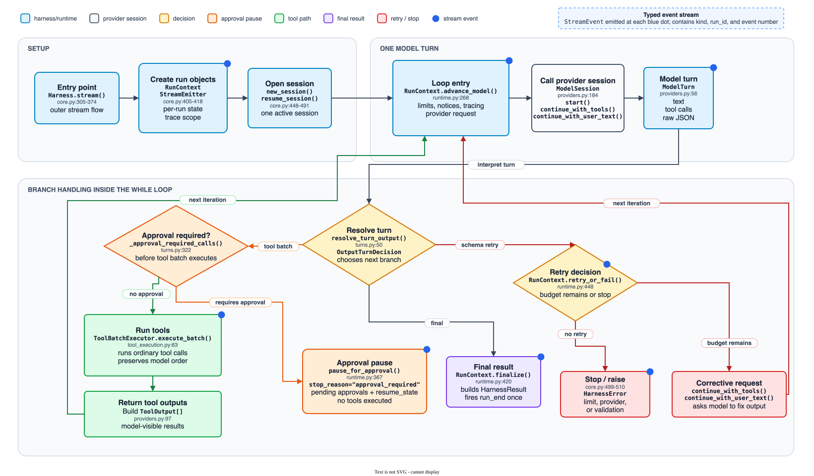

ThinHarness is a focused agent harness with a small runtime surface. The same loop runs no matter which provider adapter is used: create a model session, ask the model for a turn, convert provider-specific responses into ThinHarness objects, execute local tools, send tool results back, and stop when the final-answer code says the run is complete.
thinharness/, including the tools package.
ThinHarness separates reusable setup from per-run state. HarnessConfig is Pydantic
configuration; Harness owns configured runtime objects; RunContext owns one
invocation's mutable state; provider ModelSession objects own provider conversation state;
ModelTurn and ToolSpec are small dataclass contracts passed across those boundaries.
For positioning, quick-start usage, and feature comparison, read README.md. This page focuses on
runtime architecture and code ownership.

Harness.run() checks that the harness can run, creates or resumes a ModelSession, and builds RunContext.RunContext.advance_model() makes one provider call with limit checks, notices, usage accounting, and model tracing around it.ModelTurn, ThinHarness's common Python object for model text, tool calls, and raw provider JSON.resolve_turn_output() reads that turn against OutputSchema and chooses the next action: final result, run tools, structured-output retry, or failure.stop_reason="approval_required" with pending approval records and an approval resume envelope.continue, ToolBatchExecutor runs ordinary tool calls and sends ordered ToolOutput values back through continue_with_tools().final, RunContext.finalize() builds HarnessResult, attaches resume state when valid, annotates tracing, and fires run_end.HarnessError with stop_reason="provider_error".output_retries is exhausted.tool_retries_exceeded.max_tool_calls are rejected before local execution.run_end is guarded so success, errors, hook cancellation, and external cancellation fire it at most once.
Harness.stream(...) is the public progress API, and Harness.run(...) is implemented
by consuming that stream until the top-level RunCompletedEvent arrives. Streaming does not change
the run loop; it exposes coarse lifecycle events from the same execution path.
HarnessResult, including provider responses, tool records, usage, stop reason, output, and resume state.HarnessResult.responses after completion when provider raw responses are needed.StreamOptions can hide model text or child subagent events, but it does not expose raw provider payloads.run_id, parent_run_id, parent_tool_call_id, agent_name, and per-stream sequence.
stream() starts eagerly when called and owns an in-process event queue. If a caller may stop
before the terminal event, use the stream as an async context manager or call aclose(); closing
the stream cancels the underlying run task and lets the harness be reused cleanly.
.
|-- thinharness/
| |-- __init__.py public API exports
| |-- core.py HarnessConfig, Harness, run-loop coordination
| |-- runtime.py RunContext, TurnDriver, and provider-call wrapper
| |-- types.py leaf run result, usage, errors, stop reasons, Json alias
| |-- tool_execution.py tool batch execution and one-call hook/tracing flow
| |-- providers.py provider transports, model adapters, session state
| |-- output.py structured-output schemas and turn decisions
| |-- hooks.py hook dataclasses, registry, context variables
| |-- subagents.py subagent tool and child harness construction
| |-- tracing.py OTel-compatible spans and local JSONL tracing
| |-- defaults.py default filesystem-agent system prompt
| `-- tools/
| |-- __init__.py tool package exports
| |-- base.py ToolSpec, ToolResult, path policy, invocation
| |-- filesystem.py FileTools: read, write, edit, search, list, glob
| |-- jsonl.py JsonlSearch and JSONL where/projection helpers
| |-- search_support.py shared ripgrep parsing and glob validation
| |-- mcp.py optional MCP transports and tool conversion
| |-- parallel_llm.py ParallelLlmTool batch completions
| `-- skills.py SkillRegistry, skill_read, skill_run
|-- tests/ pytest coverage for every feature area
|-- e2e/ live-provider journeys, intentionally outside CI
|-- examples/ shared scenario registry plus thin agent entrypoints
|-- docs/ decisions, user docs, site files, releasing notes
|-- README.md motivation, usage, comparison table
`-- pyproject.toml package metadata, deps, ruff, pyright, pytest| Name | Meaning | Relationship |
|---|---|---|
HarnessConfig | Pydantic setup model: root, model ref, tool selection, limits, output mode, tracing, MCP, subagents, path policies. | Configures a Harness. |
Harness | Long-lived configured runner. It owns tool maps, model object, hooks, skill registry, MCP server list, and tracing configuration. | Creates a fresh RunContext for each run. |
TurnDriver | Internal runtime helper that owns the active model session plus per-run request constants. | Builds trace snapshots and delegates every model-session call through RunContext.advance_model(). |
RunContext | Internal state for one Harness.run(...): responses, tool records, usage, retry/notice state, terminal error, stop reason, tracing span, and final result. | References the reusable Harness, but is not stored on it after the run. |
HarnessResult | Final run result: final text, parsed structured output, raw provider responses, tool call records, usage, stop reason, and resume state. | Receives finalized state from RunContext. |
RunUsage | Counts model requests, tool calls, cancelled tool calls, output retries, and per-tool retry counts. | Per-run counter owned by RunContext and returned in HarnessResult. |
| Name | Meaning |
|---|---|
Model | Protocol for reusable model configuration. It creates isolated ModelSession objects. |
ModelSession | Per-run provider conversation state. Anthropic and OpenRouter sessions store message lists; OpenAI Responses stores previous_response_id. All expose start, continuation, correction, resume, and dump_state methods. |
ModelTurn | Normalized provider response: assistant text, requested ModelToolCall entries, raw provider JSON. |
ModelToolCall | Normalized tool request with id, name, and raw JSON argument string. |
ToolOutput | Tool result sent back to the provider so the model can continue after a tool call: call id plus model-visible output string. |
ModelNotice | Provider-neutral model input notice for run-budget warnings, including remaining model requests and remaining tool calls. |
Every model-callable tool is represented by ToolSpec, a dataclass that packages
the tool definition sent to the model with the Python callable that executes it. A spec includes
a name, description, JSON schema or Pydantic argument model, handler callable, sequential flag,
metadata, optional retry budget, background mode, and approval flag.
The result sent back to the provider is always a JSON envelope with ok, content, and metadata.
ToolSpec.handler is the callable the harness invokes after it parses and validates
the model's JSON arguments. It can be a plain function, a bound method, a callable object,
or an async callable. The harness calls it as handler(args), then converts
a ToolResult, string, or JSON-serializable value into the output envelope sent back to the provider.
Built-in tool modules often use classes to hold shared state, but the class itself is not
the model-callable tool. For example, FileTools.specs() creates several
ToolSpec objects whose handlers are bound methods such as self.read,
self.write, and self.search. Each bound method carries the configured
root path, path policies, limits, and spill behavior from that FileTools instance.
sequential=True means calls involving that tool force the current model-emitted
tool-call batch to run serially instead of concurrently. The flag is used only inside ThinHarness,
not sent to the model as part of the tool JSON schema. With the default batch policy, one sequential
tool makes the whole batch run in model order.
builtin_tools is a list of tool names. When omitted, ThinHarness exposes the default filesystem
tools. When provided, it selects from built-in candidates such as filesystem tools, skill_read,
skill_run, subagent, and parallel_llm.
| Surface | Class or owner | How it enters the harness | Important behavior |
|---|---|---|---|
| Filesystem | FileTools |
builtin_tools(root, ...) returns FileTools(root).specs(). |
Default exposed set is read, write, edit, search, list, glob. Mutating tools are marked sequential=True. |
| Framework-provided | Varies: skills, subagents, MCP adapters, JSONL search, and ParallelLlmTool |
Built-in candidates, configured extras, or discovered MCP tools are converted into ToolSpec objects and added to the same runtime tool map. |
Optional surfaces still use normal tool execution. The Extras section covers feature-specific ownership and constraints. |
| Custom | Caller-provided ToolSpec |
Registered at construction with tools=[...] or later with add_tool(); both populate the same runtime tool map. |
Sync handlers run in worker threads. Async handlers run directly. Pydantic args turn validation failures into retry envelopes. Background behavior is opt-in through ToolSpec.background; human approval is opt-in through requires_approval=True. |
ToolCallExecutor.execute_one(call) sets the current tool-call context.before_tool_call hooks can cancel before local execution.{"ok", "content", "metadata"} envelope.after_tool_call hooks can rewrite model-visible output before tracing records the result.ModelRetry to ask the model to retry with a hint.after_tool_call hooks can rewrite output text, but retry control flow is captured before that mutation.Background mode lets a long-running tool call return a start notice immediately while its handler keeps running inside the same harness run. It is a tool-execution policy, not a detached queue or host-level job system.
| Mode | Model-facing behavior | Runtime behavior |
|---|---|---|
background="never" |
No background argument is exposed. | The default: the handler result is returned before the next provider request. |
background="model" |
The model can opt into background execution with _background: true, except when all tool-call batches are configured to run serially. |
In serial batch execution, the private switch is hidden so a batch cannot advance before the handler completes. |
background="always" |
No switch is exposed to the model. | Every call starts as background work. This mode is rejected when all tool-call batches are configured to run serially. |
ToolCallExecutor prepares the start notice and BackgroundToolManager owns the pending task.background_task_started.ToolResult envelope behavior.background_task_completed.background_completion notice on the same continuation as foreground tool outputs.final_result tool call was waiting, the completion is sent as a tool output so the provider transcript is repaired before finalization.Provider classes own auth, base URL, HTTP client setup/cleanup, and request posting. Model classes own static settings and create session objects. Session classes own mutable conversation state.
| Provider | Transport class | Model class | Session state | Structured-output default |
|---|---|---|---|---|
| OpenAI Responses | OpenAIProvider |
OpenAIResponsesModel |
OpenAIResponsesSession.previous_response_id |
native: ask OpenAI directly for JSON-schema output. |
| Anthropic Messages | AnthropicProvider |
AnthropicMessagesModel |
system plus full messages transcript |
tool: use the harness-created final_result tool because Anthropic native JSON-schema output is not supported here. |
| OpenRouter chat completions | OpenRouterProvider |
OpenRouterModel |
full chat messages transcript |
tool by default; explicit native mode is passed through as OpenRouter response_format. |
Resume state is intentionally provider-owned and strictly validated. It checks kind, version, model, known fields, field types, unknown keys, and JSON serializability. It does not verify that tools or system prompts match the original run; callers own that compatibility.
infer_model("provider:model") selects the adapter and creates provider/settings objects.ModelNotice values are rendered with render_model_notices() and inserted into provider input by each session method; prompt starts/corrections append text, while tool continuations may add notice content after tool outputs._responses_tool_to_anthropic() and _responses_tool_to_chat() convert the common function-tool schema._extract_responses_tool_calls(), _extract_anthropic_tool_calls(), and _extract_chat_tool_calls() convert provider-specific tool calls into ModelToolCall objects.Hooks and tracing are runtime surfaces, not model-callable tools. The harness works with no registered hooks, but the hook points are part of the run lifecycle. Tracing records the lifecycle through spans; it should not change control flow.
Hooks are runtime-only callables registered as Hook(event, handler, tools=None, agents=None).
Dispatch is synchronous and ordered, so earlier hooks can deterministically cancel or mutate context before
later hooks run. Tool filters only apply to tool events; agent filters only apply to subagent events.
Limit and retry logic is not implemented through hooks; hard limit events notify hooks after the runtime
detects the limit condition.
| Event | Can cancel? | Can mutate? | Filter |
|---|---|---|---|
run_start | No | No | None |
user_prompt_submit | Yes | Add prompt context | None |
before_tool_call | Yes | No | Tool name |
after_tool_call | No | Rewrite model-visible output | Tool name |
before_subagent_run | Yes | No | Agent name |
after_subagent_run | No | No | Agent name |
limit_reached | No | No | None |
run_end | No | No | None |
RunTracer opens agent, model, and tool spans across every configured TracingOptions sink.
Local tracing is enabled by default for top-level harnesses unless THINHARNESS_DISABLE_LOCAL_TRACING disables it.
Trace attributes follow the OpenTelemetry GenAI semantic conventions used by the local tracing implementation.
tracing extra.
These surfaces are not required for ordinary harness runs. They still use the same Harness and
ToolSpec machinery, but applications can ignore them unless they need specialized search,
skills, delegation, MCP, or one-shot model fan-out.
| Extra | How it enters the run | Boundary / behavior |
|---|---|---|
| JSONL search | FileTools.__init__ creates self.jsonl, and FileTools.specs() includes self.jsonl.spec(). |
Specialized search over large JSONL content stores: ripgrep prefilter, field paths, where filters, projection, row limits, and truncation through FileTools spill behavior. |
| Skills | skills_dir discovers available skills, but the model only gets skill tools when builtin_tools includes skill_read or skill_run. |
Skills add prompt summaries plus skill_read and skill_run; they do not create one tool per skill. |
| Subagents | The subagent framework tool builds a child Harness and returns the child result as a tool result. |
The parent tool call awaits the child run. Child harnesses always receive subagents=[], structurally disabling recursion. |
| MCP | Configured server objects connect lazily and discover tools into live ToolSpec objects. |
Subagents do not inherit parent-discovered MCP tools as ordinary custom ToolSpec objects. A named subagent can opt into MCP with inherit_mcp_servers=True or its own mcp_servers=[...]; then the child harness discovers MCP tools through its own connection lifecycle against those configured server objects. |
| Parallel LLM | Available built-in tool candidate via create_parallel_llm_tool(parent), or custom renameable ParallelLlmTool(...).spec(). |
Runs independent one-shot prompts concurrently. The built-in is configured by application code and text-only; custom ParallelLlmTool can opt into structured output. |
README.md for motivation and constraints: reusable loop primitives, small runtime surface, provider-agnostic, no shell by default.thinharness/tools/base.py to understand ToolSpec, ToolResult, argument validation, retry envelopes, and path policy.thinharness/providers.py through the common dataclasses/protocols, then skim each provider session.thinharness/output.py so final-answer decisions make sense before reading the loop.thinharness/core.py and thinharness/runtime.py together. Read Harness.__init__, then Harness.run, then TurnDriver and RunContext.advance_model.thinharness/tool_execution.py to see how a model-emitted batch becomes ordered provider outputs.thinharness/tools/filesystem.py to understand the default workspace tools the model can call.thinharness/hooks.py and thinharness/tracing.py to understand lifecycle callbacks and run observability.thinharness/tools/jsonl.py, thinharness/subagents.py, thinharness/tools/mcp.py, thinharness/tools/skills.py, and thinharness/tools/parallel_llm.py.tests/test_harness.py, then the feature-specific test file for whatever you are changing.This section is for code ownership: the details you need to answer why the code is organized this way, where behavior lives, and which boundaries are deliberate. It focuses on the current implementation: runtime ownership, tool execution, structured turn resolution, provider/session boundaries, tracing, resume, subagents, MCP, search support, and parallel LLM.
ThinHarness uses different Python object types for different responsibilities. The short rule is: serializable setup uses Pydantic, runtime records use dataclasses, long-lived state holders use ordinary classes, and callable boundaries use functions or protocols.
| Shape | Used for | Why | Examples |
|---|---|---|---|
| Pydantic model | Caller-owned configuration and typed argument/output validation. | It validates user input, can produce JSON schema, and is reasonable to serialize or inspect. | HarnessConfig, SubAgentConfig, tool args such as ReadArgs, structured output types. |
| Dataclass | Runtime objects, provider-independent records, and small objects that carry a decision. | These are Python-side values, often carrying callables, raw provider data, or mutable run state. | ToolSpec, ToolResult, ModelTurn, RunUsage, hook contexts, OutputTurnDecision. |
| Ordinary class | Objects that own state, configuration, setup/cleanup, or a family of methods. | The instance owns durable state; individual methods can still be exposed through small dataclasses such as ToolSpec. |
Harness, FileTools, provider classes, model/session classes, MCPServer, ParallelLlmTool. |
| Callable/function | Execution hooks and model-callable tool handlers. | The harness only needs something it can call after preparing context or arguments. | ToolSpec.handler, hook handlers, nested handlers inside ParallelLlmTool.spec(). |
| Protocol | Provider-neutral interfaces. | Different providers can implement the same required methods without inheriting from the same base class. | Model, ModelSession, tracer-like objects accepted by tracing. |
Inheritance is intentionally light. Provider session classes implement the same session protocol, but the core
loop mostly uses composition: Harness owns a model, tool specs, hooks, tracing options, skill registry,
and MCP server list. Built-in tools often use classes as state holders, then hand bound methods to ToolSpec.
core.py, runtime.py, and tool_execution.py
The run loop is divided by ownership. core.py coordinates the public run,
runtime.py owns one run's mutable state, the active-session TurnDriver, and the repeated wrapper around each provider call, and
tool_execution.py owns model-requested tool batches and the hook/tracing flow for one tool call.
| File | Owns | Owned elsewhere |
|---|---|---|
core.py |
Harness construction, public run API, running/closed checks, provider session selection, and choosing the next action after each model turn: build the final result, run tools, retry structured output, or fail. | providers.py owns provider API payload details; tool_execution.py owns one tool call's hook/tracing flow; runtime.py owns repeated provider-call wrapper code. |
runtime.py |
One run's mutable state, active-session turn driver, responses, usage, tool records, limit notices, terminal result/error, stop reason, resume attachment, run_end guard. |
providers.py owns provider-specific API request formats; tool_execution.py owns individual tool invocation mechanics. |
tool_execution.py |
Batch execution policy, hook/tracing flow for one tool call, current tool-call context, output parsing, retry-kind capture. | output.py owns structured final-answer validation; core.py chooses whether the next provider call starts, continues with tools, retries output, or stops. |
output.py |
Classifies a returned ModelTurn as final, continue with tools, retry via user message, retry via tool output, or unexpected. |
core.py acts on that decision; runtime.py owns retry-budget exhaustion; providers.py owns transport calls. |
The important handoff is TurnDriver plus RunContext.advance_model(request, trace_snapshot, output_retry=False).
core.py chooses whether to start, resume, send tool outputs, or send a correction, and TurnDriver
supplies the matching provider-session method call. The run-loop
diagram may label the second case as "continue" for space, but the code path is continue_with_tools(...).
runtime.py wraps that callable with limit checks, usage accounting,
model tracing, notice computation, response capture, and output turn resolution.
This keeps provider API payload knowledge in providers.py while keeping the repeated provider-call wrapper
in one place.
Approval-required tools are a loop primitive rather than a special model output format. A custom
ToolSpec can set requires_approval=True. When a model turn asks for any such
tool, core.py pauses before the batch reaches ToolBatchExecutor, so neither the
approval-required call nor any normal sibling call has side effects yet.
| Piece | Role in approval flow |
|---|---|
approvals.py |
Builds and validates the approval_pause envelope, restores usage/history, and validates that host decisions exactly cover approval-required call ids. |
RunContext.pause_for_approval() |
Captures provider resume state, pending tool batch, usage, responses, tool records, emitted limit-warning keys, metadata, and any background-task cancellations before emitting RunCompletedEvent. |
Harness.resume_approvals() |
Restores the logical run, resumes the provider session, emits ApprovalResumedEvent, validates the approval-required tools still exist, and processes the paused batch. |
ToolBatchExecutor |
Runs approved calls and normal sibling calls through the standard hook, tracing, retry, background, and output-ordering machinery. |
Rejected calls bypass tool hooks and do not execute. They still produce ordered tool outputs for the provider:
a failed ToolResult with error_type="ApprovalRejected". From the model's perspective,
it requested tools and then received tool results on the next turn; it never sees the host pause itself.
The paused batch counts against usage.tool_calls at pause time and is not counted again during
resume. The post-resume result contains the whole logical run history, not only the second half of the run.
This is why approval envelopes are larger than plain provider resume state: they carry prior responses and
accounting as well as the provider checkpoint.
A provider returns one ModelTurn. That object has text, a tool_calls list, and raw
provider JSON. The tool_calls field is a list[ModelToolCall], where each ModelToolCall
has the provider call id, tool name, and raw JSON argument string.
When resolve_turn_output() decides the turn should continue with ordinary tools, the harness executes
the whole model-emitted batch and sends one ordered set of ToolOutput values back through
continue_with_tools(...).
ToolBatchExecutor chooses serial execution if any requested tool is marked sequential=True; otherwise it can run calls concurrently.ToolCallExecutor sets the current tool-call context, then runs before_tool_call hooks that may cancel the call.{"ok", "content", "metadata"} tool envelope.after_tool_call hooks can rewrite the output text the model sees.tool_call_records and provider-facing ToolOutput values preserve the original model order.
Background-capable tools use the same execution path with one extra ownership layer. The top-level
Background Mode section covers the public contract; internally,
ToolCallExecutor returns a start notice, BackgroundToolManager owns the pending task,
and the completion later re-enters the provider conversation at the next legal request. Ready completions
are coalesced with foreground tool outputs when possible; if the model tries to finalize first, the harness
waits if needed, delivers the completion, and requires the final answer again.
These are the main branches after a model asks for a tool call. They determine whether ThinHarness asks the model to repair its request, reports a normal tool failure, or continues the provider conversation.
| Case | What happens | Why it matters |
|---|---|---|
| Bad JSON or bad Pydantic args | Returns a failed tool envelope with metadata.retry=true. |
The model passed arguments in a fixable bad format, so the harness can ask it to retry. |
Handler raises ModelRetry |
Returns a retryable envelope with the handler's hint. | Tool code can classify a domain-level mistake as model-repairable. |
| Handler raises an ordinary exception | Returns ok=false without metadata.retry=true. |
The model can still call tools later, but this result does not ask it to repair the same call and does not increment the tool retry budget. |
after_tool_call rewrites output |
The model sees the rewritten text, but retry control flow was captured first. | Hooks own presentation; the harness owns retry budget accounting. |
Any called tool has sequential=True |
The whole current batch runs serially in model order. | Mutating tools avoid race conditions without partitioning the batch into smaller dependency groups. |
| Tool runs in background | The original call returns a start notice, the handler keeps running, and completion is delivered at the next legal provider request. | The agent can keep using independent tools without losing the eventual result or leaving detached work behind. |
Provider adapters are deliberately layered. Provider transport classes own auth, base URL, timeout, and HTTP client setup/cleanup. Model classes own reusable static settings. Session classes own mutable conversation state.
In plain terms: a Model is the reusable object you pass into Harness(..., model=...). It knows
which provider/model/settings to use, but it should not hold the live conversation transcript. For each
Harness.run(...), it creates a fresh ModelSession; that session is the object the harness
actually talks to during the run.
| Layer | Mutable? | Responsibility |
|---|---|---|
| Provider transport | HTTP client setup/cleanup only | Post HTTP requests, wrap HTTP/transport errors, close owned clients. |
| Model | No provider transcript | The reusable object passed to Harness. It creates a fresh session with new_session(), or a resumed session with resume_session(...) when resume is supported. |
| ModelSession | Yes | The per-run conversation object. core.py calls its start(...), continue_with_tools(...), correction, resume, and state-dump methods. |
ModelTurn |
No | Common result object: final text extracted from the response, requested tool calls, and raw provider JSON. |
The core loop should not know OpenAI Responses, Anthropic Messages, or OpenRouter Chat Completions API formats.
It receives a ModelTurn and applies the same output resolution, tool execution, tracing, hook, limit,
and retry logic regardless of provider.
Provider-specific translation stays in providers.py: common function tools become Anthropic
input_schema tools or Chat Completions function tools; native structured output requests become
provider-specific API fields; notice text is rendered into each provider's input format.
Structured output is not bolted onto every provider separately. The harness builds an OutputSchema
from the caller's output spec, then providers translate the provider-native request details when native mode is used.
resolve_turn_output() decides what one returned ModelTurn means.
| Mode | How the model is guided | How the final result is recognized |
|---|---|---|
text |
No schema payload and no harness-created tool. | Final assistant text populates both text and output. |
native |
The provider API is asked directly for JSON-schema output. | A final native-output turn has no ordinary tool calls. Earlier turns may still request ordinary tools; final assistant text is parsed and validated through Pydantic. |
tool |
A harness-created final_result function tool is exposed to the provider. |
Exactly one final_result call, with no sibling tool calls in that same turn, completes the run and builds the final result. |
prompted |
The harness appends JSON-schema instructions to the prompt/instructions instead of using provider-native schema output or final_result. |
A final prompted-output turn has no ordinary tool calls. Earlier turns may still request ordinary tools; final assistant text is parsed and validated. |
final_result is harness-created, not a normal user tool. It is reserved only when structured tool mode is active,
is not exposed in self.tools, does not fire tool hooks, does not count as usage.tool_calls,
and makes the exit non-resumable because the provider transcript would contain an unanswered synthetic tool call.
Native and prompted structured-output exits can still be resumable when the provider session can dump clean resume state.
Non-object output schemas such as lists are wrapped under a single value argument for tool mode because
function tool arguments must be JSON objects. Validation uses Pydantic's public TypeAdapter API and
local schema cleanup. The local implementation is intentionally narrower than Pydantic AI: it does not stream
partial structured objects, treat a Python function signature as the output schema, or run custom output validator hooks.
Invalid structured output creates corrective model requests until output_retries is exhausted.
Retry-budget exhaustion is handled by the caller of the resolver: Harness.run() turns it into a run failure, while
ParallelLlmTool turns it into a per-entry failure.
Harness is reusable setup; RunContext is one invocation's state. That distinction is
the main reason repeated runs on the same harness do not leak responses, usage, limit warnings, or resume bookkeeping.
| Concept | Where it lives | Important detail |
|---|---|---|
| Model request limit | RunContext and RunUsage.model_requests |
Counts provider calls, including corrective structured-output requests after the limit check allows them. |
| Tool call limit | RunContext.check_tool_limit and RunUsage.tool_calls |
Counts model-requested ordinary tool calls before execution, so hook-blocked calls still count. |
| Cancelled tool calls | RunUsage.cancelled_tool_calls |
Tracked separately after before_tool_call hooks cancel calls; cancellation does not erase the requested-call count. |
| Tool retry budget | RunUsage.tool_retries, a dict keyed by tool name and updated by RunContext.check_tool_retry_limits(...) |
Two calls to the same tool share the same retry counter. This is coarse by design. |
| Output retry budget | Budget: HarnessConfig.output_retries. Current count: RunUsage.output_retries. |
Counts corrective model requests after invalid structured output, not total validation attempts. RunContext.retry_or_fail() checks the budget before the corrective request is made. |
| Near-limit notices | _compute_limit_notices(...) returns provider-facing ModelNotice values; RunContext.emitted_limit_warnings records which warning thresholds already went out. |
Computed from the current RunUsage.model_requests and RunUsage.tool_calls before the next provider request. A warning for the same budget threshold is sent once per run, not repeated on every later provider call. |
| Resume state | Provider-specific resume state copied into HarnessResult.resume_state while building the final result. |
OpenAI stores a previous_response_id; Anthropic and OpenRouter store their message transcript plus provider metadata. Callers can store and pass it back, but should not edit or construct it. |
| Approval pause state | Harness-level approval_pause envelope copied into HarnessResult.resume_state when stop_reason="approval_required". |
Wraps provider state plus pending batch, run history, usage, emitted limit-warning keys, metadata, and background cancellations. It must be resumed with resume_approvals(), not resume_from. |
resume_from starts a new turn from a previous clean result. It is not a failed-request retry,
interrupted-tool continuation, or transcript repair mechanism. Errors, cancellation, limit exits, tool retry
exhaustion, output validation failure, unexpected model behavior, and tool-mode final_result exits
intentionally produce no checkpoint.
Extras are specialized capabilities that an application can ignore unless it uses that feature. They still
enter the run through existing ToolSpec, Harness, and provider-session boundaries.
| Extra | Where responsibility changes hands | Boundary / behavior |
|---|---|---|
| JSONL search | FileTools owns the JsonlSearch instance and exposes its spec with the filesystem built-ins. |
search_support.py holds shared ripgrep parsing, glob validation, containment filtering, and search-root helpers used by both text search and JSONL search. |
| Subagents | The subagent framework tool builds a child Harness and returns the child result as a tool result. |
Child runs start fresh, recursion is structurally disabled, and inherited custom tools are live ToolSpec objects. |
| MCP | Configured server objects connect lazily and discover tools into live ToolSpec objects. |
Subagents do not inherit parent-discovered MCP tools as ordinary custom ToolSpec objects. They opt into MCP through inherited or explicit server config, then discover tools in the child harness lifecycle. |
| Skills | SkillRegistry exposes skill_read and skill_run when skills are configured. |
Skills add prompt summaries plus skill_read and skill_run; they do not create one tool per skill. Script runners are extension-based. |
| Parallel LLM | A normal ToolSpec wrapper for independent one-shot model calls. |
The built-in is configured by application code and text-only; custom ParallelLlmTool can opt into structured output. |